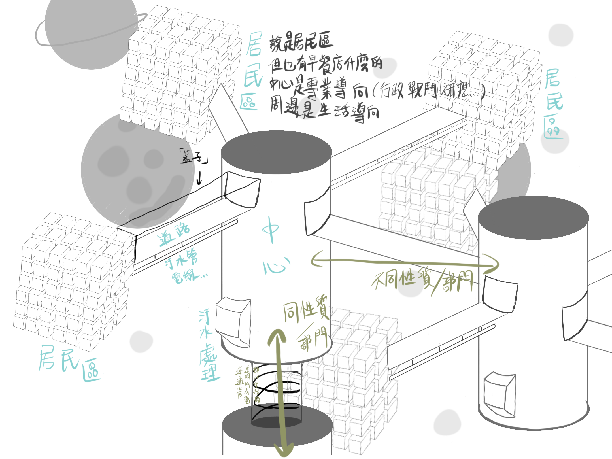

沃斯托十分強大，幾乎統治了宇宙中所有智慧生物，同時設立結界，過去是防止外來者的侵襲，現下功能為告知範圍，避免有人迷失。
每個星系皆能見到以下區域鏈。


沃斯托十分強大，幾乎統治了宇宙中所有智慧生物，同時設立結界，過去是防止外來者的侵襲，現下功能為告知範圍，避免有人迷失。
每個星系皆能見到以下區域鏈。

共有四個模塊，分別為——戰鬥、研究、行政、居民
聯邦總部為星系零，在宇宙中獨立創造的人工區域，附近少見星球，該地處空曠，較特殊的是具有人工星球：娛樂區。
無人知曉元老院實際位置，實際上也沒幾個人在意。
貨幣會在沃斯托總部、分部使用，當人們需要到這些地方辦公、購物時，就得兌換成對應的貨幣（亞齊），但若是地方（星球）使用，基於過多星系和種族，地方可以使用個人的貨幣。
1 Azey 約略等於 15新台幣
1蘇(su) = 一萬亞齊
例：1蘇200亞 = 一萬零二百亞
1免(mian) = 一億亞齊 = 一萬蘇
20 珥(er) = 1 亞齊
例： 400珥 = 20 亞齊
但可以更細分為，同個星球底下也許會出現大於1個國家，處理方法有兩種以上。
A：都使用亞齊
B：兩者都一起使用，擇一來和聯邦兌換
C：兩者都一起使用，但另外創造一種幣值和聯邦兌換
有些起初沒有交易概念的星球，便會使用中央發行的貨幣，也就是亞齊，而不願意更動貨幣的國家便需要兌換。
旅行於各地時，推薦先將A地點的貨幣轉換成亞齊，接著再兌換成B地點的，但這就造成一種賺價差的行為，因此有些人會直接A到B，但不一定有保障。
註：亞齊是最大的幣值。就是1亞齊能兌換很多個他處的貨幣，但不是大於1個亞齊才能兌換他處的1幣值。
外觀：設計當中。
正常的一頓飯，大約需要花費2~3亞齊。並不貴，請記得聯邦的目標是福祉人類，金錢只是載體。
零食，花費10珥到以上不等，或是能拿來購買一些螺絲零件，不一定，可以自己決定。順帶一提員工餐廳只要5珥便能享用一餐，可以自行辦理自動扣款、儲值卡、單次付費等，你想的到的功能。
有些店家會標示：2亞19珥看起來就比3亞便宜，不是嗎？
安斯艾爾的位階是上校，他每個月大約獲得4100個亞齊（約六萬一台幣），在沃斯托當軍人的待遇並不差，甚至能反過來幫助貧窮家庭，因此許多人願意甚至拼命的想要當軍人。但當你一但到達那個位置，你所擁有的「視野」也會改變，想擁有的東西早就淺移默化的更動了。
在聯邦，你可以買到你想要的一切，甚至一顆星球或是艦艇。
戰鬥部門的人通常居住在此區域，即使不和蟲族對戰，也需要處理內部爭擾，同時進行懲處，從聯邦建立最初時便存在，通常會攜帶家眷一起住在該區域的居住區，受到內部的高度關注，採用嘉獎制度以維持忠誠。
研究部的人稱圓柱體為研究所，是他們每日上下班的地方。聚集了聯邦的高知識份子，每層樓有各自的專業，大廳在正中層，有些後面加入的項目會建立在區域鏈，或是向上下加蓋，取決於項目內容。
處理文書類的工作，包含物流、升官、檢定......等，術業有專攻，大多數他們接收來自元老院的指令，派發給指定的部門，文件大多數都是加密文件或電子，該部門中心有自己的獨立網路，受到層層加密，避免被人利用，獨立網路依然受到聯邦監管。
例：造艦場、糧食部門、物流部門
位於聯邦總部生活的居民，但不隸屬於以上設施，他們會在該區進行交易或建立個人品牌，或是維修......等職業，每個人都須工作，總部區域不允許無產值的人、流浪漢，除非居民因特殊原因無法工作，但其家屬、照顧者依然有能力工作。
* 無產值之人會被驅逐出總部，但依然可以留在聯邦境內。
總部旁的星球，不大，但很熱鬧，建築物幾乎覆蓋了整顆星球，除了上班區，人流量最大的地方，混亂又和平，想的到的娛樂在這裡一概含括其中，在這裡創業的人很多，但賠到傾家蕩產的也多。注意，別迷失在當中。